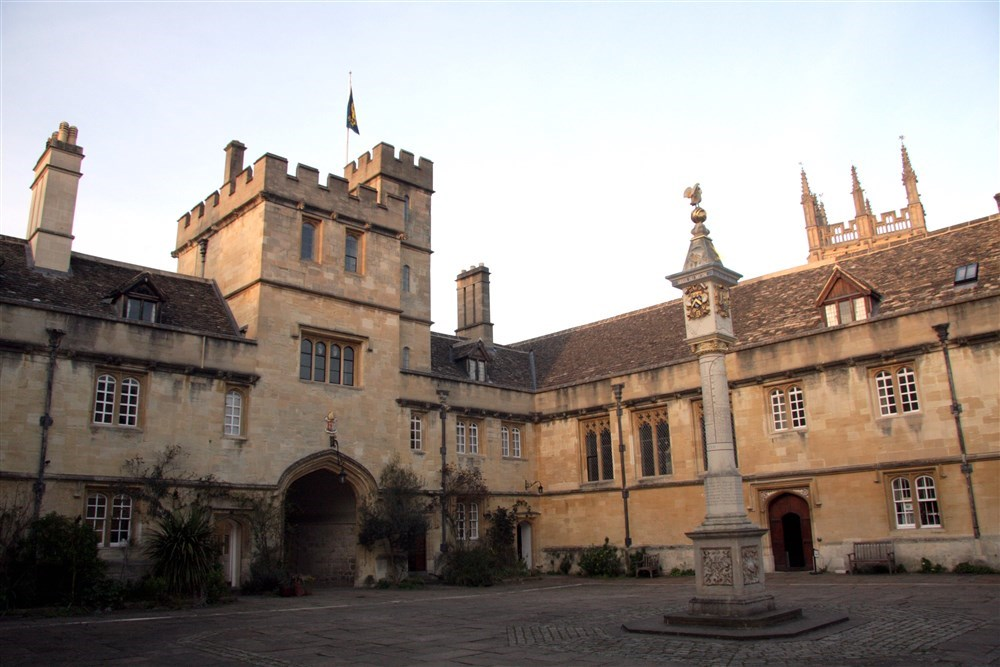

His Early Life
George Napier was born in the Old Manor House, Holywell, just outside the walls of Oxford City in the year 1548. He was a son of Edward Napper (died in 1558), sometime Fellow of All Souls College, Oxford, by Anne, his second wife, daughter of John Peto, of Chesterton, Warwickshire, and niece of Cardinal William Peto. He attended and studied at the Oxford Grammar School and went on to continue his studies to Corpus Christi College on the 5 January 1566, but was ejected in 1568 as a recusant–someone who refused to attend Anglican services. This happened because in 1568 George Napier opposed Queen Elizabeth's nomination of a renegade Catholic, William Cole, as President of the College. George and two friends nominated Robert Harrison who was favourable to Catholicism. The Queen forced the College to elect her Candidate and expelled George Napier and his friends. He returned to Holywell and built a house with his brother William on some property they owned in Cowley as a place of shelter for priests.
This is a picture of Corpus Christi College, Oxford University

This is the Oxford Wall Plaque of people who suffered for their fiath